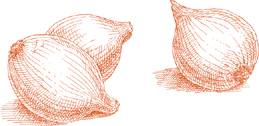

The salad course  The literal meaning of the Italian for a salad—un’insalata—is “that to which salt has been added,” but the word also enjoys popular metaphorical usage, applied disparagingly when describing, for example, an interior decor or a set of thoughts that appears to be rather mixed up. Then there is L’insalata, which specifically refers to the salad course, a course with a clearly defined role in an Italian meal’s classic sequence. L’insalata is served invariably after the second course to signal the approaching end of the meal. It releases the palate from the grip of the cook’s fabrications, leading it to cool, fresh sensations, to a rediscovery of food in its least labored state.
The literal meaning of the Italian for a salad—un’insalata—is “that to which salt has been added,” but the word also enjoys popular metaphorical usage, applied disparagingly when describing, for example, an interior decor or a set of thoughts that appears to be rather mixed up. Then there is L’insalata, which specifically refers to the salad course, a course with a clearly defined role in an Italian meal’s classic sequence. L’insalata is served invariably after the second course to signal the approaching end of the meal. It releases the palate from the grip of the cook’s fabrications, leading it to cool, fresh sensations, to a rediscovery of food in its least labored state.
The principal, and usually only components of the salad course, are vegetables and greens, either raw or boiled, on their own or combined. The choice changes as the season does: raw finocchio or shredded Savoy cabbage or boiled broccoli in fall and winter; in the spring, boiled asparagus and green beans, followed by zucchini or new potatoes; in the fullness of summer, raw ingredients prevail, with tomatoes, peppers, cucumbers, lettuces, and an assortment of small greens. The broadened availability of many vegetables through much of the year has, of course, blurred some of the seasonal distinctions, but we still want the salad course to speak to us of the season that produced its components.
There are certainly a great many other kinds of salads, such as rice and chicken salads, rice and shellfish, tuna and beans, or any number of dishes that contain cold meats, fish, or chicken mixed with legumes or with raw or cooked vegetables. Such salads may be served as an appetizer, as a first course instead of pasta or risotto, as the principal course of a light meal, or as part of a buffet table. In fact, they may be served as anything except as L’insalata, the salad course.
Dressing the salad course Italian dressing is extra virgin olive oil, salt, and wine vinegar.
Many variations on the same proverb give us the formula for a perfectly seasoned salad. One version says, for a good salad you need four persons: A judicious one for the salt, a prodigal one for the olive oil, a stingy one for the vinegar, and a patient one to toss it. Olive oil is the dominant ingredient, and a properly made salad ought not to taste shy of it. Italians will never say, when savoring a well-tossed salad, “What a wonderful dressing!” They do say, “What marvelous oil!”
When washed raw greens go into a salad, they must first be shaken thoroughly dry because the water that clings to them dilutes the dressing. Salad spinners do the job, or you can wrap the greens in a large towel, gather all four corners of the towel in one hand, and give the towel several abrupt shakes over a sink.
The salad course is dressed at the table when ready to serve; it is never done ahead of time. The salad for the whole table should be in a single large bowl, with ample room in it for all the vegetables to move completely around when tossed. The components of the dressing are never mixed in advance, they are poured separately onto the salad.
First put in the salt and bear in mind that judiciousness does not mean very little salt, it means neither too much nor too little. Give the salad one quick toss to distribute the salt and begin to dissolve it, then pour in the oil liberally. From observation, I have found people outside Italy never use sufficient oil. There should be enough of it to produce a gloss on the surface of the vegetables. Add the vinegar last, just the few drops necessary to impart aroma, and never more than one skimpy part vinegar to three heaping parts oil. A little vinegar is sufficient to be noticed, a little too much monopolizes all your attention to the disadvantage of every other ingredient. Also bear in mind that the acid of vinegar, like that of lemon, “cooks” a salad, which explains why the oil is poured first, to protect the greens. As soon as you put in the vinegar, begin to toss. The more thoroughly a salad is tossed, and the more uniformly the salt, oil, and vinegar are distributed over every leaf and every vegetable, the better it will taste. Toss gently, turning the greens over delicately, to avoid bruising and blackening them.
Other seasonings Freshly squeezed lemon juice is an occasional, agreeable substitute for vinegar. It is excellent on cooked salads, such as boiled Swiss chard, which are then described as all’agro, in the tart style. Lemon is also welcome on carrots shredded very fine, or in summer on tomatoes and cucumbers.
Garlic can be exciting when you turn to it sporadically, on impulse, but on a regular basis, it is tiresome. Its presence should be an offstage one, as in the Shredded Savoy Cabbage Salad, or in the tomatoes in this recipe.
Pepper is not common. It was probably too expensive a spice originally to become part of a humble, everyday dish like salad. But if you like it, there is certainly a place for it in Italian salads, as long as it is black pepper, because it has a more complete aroma than the white.
Balsamic vinegar, however unfamiliar it may have been until recently to other Italians, has been used in Modena for centuries to lift the flavor of the basic salad dressing. But the Modenese have never used it every day, and neither would I. Its sweetness and its dense fragrance are qualities that can be called upon, from time to time, to amaze the tastebuds, but call on them too often and they become cloying. When dressing a salad, balsamic vinegar is used to enrich regular wine vinegar, not to replace it.
Either basil or parsley will do most salads some good. The uses of mint, like those of marjoram and oregano, are more limited, as the recipes in this chapter will illustrate.
Sliced onion quickens the flavor of most raw salads, particularly those with tomatoes. To blunt its sharp bite, the onion must be subjected to the following procedure, beginning 30 minutes or more before preparing the other ingredients of the salad:
• Peel the onion, slice it into very thin rings, put it in a bowl, and cover amply with cold water.
• Squeeze the rings in your hand for 2 or 3 seconds, closing your hand tightly and letting go for seven or eight times. The acid you squeeze out of the onion will make the water slightly milky.
• Retrieve the onion rings with a colander scoop or strainer, pour the water out of the bowl, put fresh water in. Put the onion back into the bowl and repeat the above procedure 2 or 3 more times.
• After squeezing the onion for the last time, change the water again and put the onion in to soak. Drain and replace with a fresh change of water every 10 minutes, until you are ready to make the salad.
• Before putting the onion into the salad bowl, gather it tightly in a towel and squeeze out all the moisture you can.

For 8 servings
½ medium onion, preferably of a sweet variety, such as Bermuda red, Vidalia, or Maui, sliced and soaked as described, OR 3 or 4 scallions
2 small carrots
1 squat, round finocchio
½ yellow or red sweet bell pepper
1 celery heart
½ head curly chicory, Boston lettuce, or escarole, OR 1 whole head Bibb lettuce
½ small bunch mâche or field lettuce
½ small bunch arugula
1 medium artichoke ½ lemon
2 fresh, ripe, firm, medium round tomatoes
Salt
Extra virgin olive oil
Choice quality red wine vinegar
Note A mixed salad in the Italian style should reach for as great a variety of textures and flavors as the market can provide, and the ingredients suggested above take advantage of the year-round availability of many vegetables. The selection should be taken as a thoughtfully considered recommendation, but it is not ironclad and you can work within its guidelines to make substitutions that suit your taste and are adapted to the possibilities offered by your market and the season.
In a mixed salad such as this one you can also use Savoy, red cabbage, or green cabbage, shredded very fine; radicchio; romaine or any other variety of lettuce, save iceberg, which does not taste very Italian; small red or white radishes, sliced into thin disks; cucumber instead of carrot, but not the two together; very young zucchini, soaked, cleaned, and trimmed as described, cut into fine matchsticks and put into the salad raw.
1. Prepare the onion as suggested or, if you are using scallion, take a thin slice off the base, trimming it of its roots, and another slice off the tops, pull off and discard any blemished or discolored leaves, then cut the whole scallion into thin rounds and rings. Soak it in cold water a few minutes, then drain and shake dry in a towel. Put the onion when ready, or the scallion, in a large serving bowl.
2. Wash the carrots, take a thin slice off the tops and bottoms, peel them, then shred them on the largest holes of a grater, or in the food processor, or cut them into the thinnest possible rounds. Add them to the bowl.
3. Cut the finocchio tops where they meet the bulb and discard them. Detach and discard any of the bulb’s outer parts that may be bruised or discolored. Slice off about ⅛ inch from the butt end. Cut the bulb horizontally, across its width, into very thin rings. Soak the rings in 2 or 3 changes of cold water, then shake dry in a towel or salad spinner. Add the finocchio to the bowl.
4. Scrape away and discard the inner pulp and all the seeds of the pepper. Skin it raw, using a swiveling-blade peeler, then cut it lengthwise into very thin strips, and add them to the bowl.
5. Cut away any leafy tops from the celery heart, take a thin slice off its base, slice the heart crosswise into narrow rings about ¼ inch wide, and drop them into the bowl.
6. If you are using curly chicory, Boston lettuce, or escarole, discard all the outer, dark green leaves. Detach the remaining leaves from the head and tear them by hand into small, bite-size pieces. Soak them in one or two changes of cold water for 15 to 20 minutes, until no trace of soil shows in the water. Drain and either spin-dry, or shake dry in a towel. If you are using Bibb lettuce, prepare it as described above but use special care in handling it because it bruises easily and discolors. Add to the bowl.
7. Pull off the stems of the mâche or field lettuce and the arugula, tear the larger leaves in two or more pieces, and soak, drain, and dry them as you did with the lettuce. Put them into the bowl.
8. Detach and discard the artichoke stem, and trim away all the hard portions as described, taking a little more off the top of the leaves than you might if you were cooking it. Split the artichoke in half to expose the choke and spiky inner leaves, which you will scrape off and discard. Cut the artichoke lengthwise into the thinnest slices you can. Squeeze a few drops of juice from the lemon half over all cut parts to keep them from discoloring, and add them to the other ingredients in the bowl.
9. Skin the raw tomatoes, using a swiveling-blade peeler, cut them into wedges, remove some of the seeds, and put the tomatoes in the salad bowl.
10. Sprinkle liberally, if judiciously, with salt, toss once, pour in enough olive oil to coat all the vegetables, add a dash of vinegar, and toss repeatedly and thoroughly, but not roughly. Serve at once.

WHEN I GAVE a series of classes in Bridgehampton, Long Island, one summer, I had devised a curriculum of pasta sauces, risotto, and fish dishes that I hoped my students would find interesting and fitting vehicles for the extraordinary products of Long Island’s farms and waters. As an afterthought one day, I included in the menu this tomato salad, done the way my father used to prepare it when I was a young girl. The response to the pastas and the fish was as enthusiastic as I could have wished, but it was the salad that stole the show. When all the tomato salad was gone, students fought for possession of the serving platter, to sop up the juices with bread. It seems difficult ever to make enough of this tomato salad, so you too may find it expedient, when you serve it, to send it to the table copiously accompanied by slices of good, crusty bread.
For 4 to 6 servings
4 to 5 garlic cloves
Salt
Choice quality red wine vinegar
2 pounds fresh, ripe, firm, round or plum tomatoes
1 dozen fresh basil leaves
Extra virgin olive oil
1. Peel the garlic cloves and mash them rather hard with a knife handle. Put them in a small bowl or saucer together with 1 to 2 teaspoons salt and 2 tablespoons vinegar. Stir and let steep at least 20 minutes.
2. Skin the tomatoes raw, using a swiveling-blade peeler, cut them into thin slices, and spread the slices out in a deep serving platter.

3. When ready to serve the salad, wash the basil leaves in cold water, shake off their moisture, tear them by hand into 2 or 3 pieces each, and sprinkle them over the tomatoes.
4. Pour the garlic-steeped vinegar through a wire strainer, distributing it over the tomatoes. Add enough olive oil to coat the tomatoes well, toss, taste and correct, if necessary, for salt and vinegar, and serve at once.
SHREDDED CARROTS with lemon juice is one of the most refreshing of salads, and may well be the simplest to prepare.
For 4 servings
5 to 6 medium carrots, washed, trimmed, peeled, and shredded as described in the recipe for Great Mixed Raw Salad
Salt
Extra virgin olive oil
1 tablespoon freshly squeezed lemon juice
Combine all ingredients, using enough olive oil to coat the carrots well. Toss thoroughly, taste and correct for salt and lemon juice, and serve at once.
To the ingredients in the preceding recipe, add ½ pound fresh arugula, and replace the lemon juice with red wine vinegar. Trim, soak, drain, and dry the arugula as described in the recipe for Great Mixed Raw Salad Combine all ingredients in the manner described above.
For 4 servings, if the finocchio is a large one
Note No vinegar or lemon juice is used on raw finocchio when it is served alone.
1. Trim the finocchio, cut it into very thin slices, soak it, and dry it as described in the recipe for Great Mixed Raw Salad.
2. Toss in a serving bowl with salt, enough olive oil to coat it well, and liberal grindings of black pepper.

For 4 servings
1. Soak the sunchokes for 15 minutes in cold water, then scrub them thoroughly under running water with a rough cloth or a brush. Cut them into paper-thin slices and put them in a serving bowl.

2. The spinach will be much more pleasant to eat if you free the tenderest part of each leaf from the stem and its chewy rib-like extention. With one hand fold the leaf lengthwise, folding it inward toward its top side, and with the other hand pull off the stem together with the thin rib protruding from the underside of the leaf. Soak the trimmed spinach in a basin with enough cold water to cover it amply. Drain and refill with fresh water as often as necessary until you find no more trace of soil. Spin-dry, or shake the leaves dry to drive away all the moisture possible, tear them into two or three smaller pieces, and add them to the bowl.
3. Toss thoroughly with salt, pepper, enough oil to coat well, and just a dash of vinegar. Serve immediately.
You WILL FIND here another example of the way only the scent of garlic is used in Italian salads. Also see this tomato salad.
For 6 or more servings
1 Savoy cabbage, about 2 pounds
A slice of crusty bread
2 garlic cloves
Salt
Black pepper, ground fresh from the mill
Extra virgin olive oil
Choice quality red wine vinegar
1. Pull off the green outer leaves from the cabbage and either discard or save for a vegetable soup. Shred all the white leaves very fine, and put them into a serving bowl.
2. Trim away the soft crumb from the bread, and from the crust cut two pieces about 1 inch long.
3. Lightly mash the garlic cloves with a knife handle, splitting the skin and removing it. Rub the garlic vigorously over both pieces of bread crust, put the crusts in the bowl and discard the garlic. Toss thoroughly and let stand for 45 minutes to 1 hour.
4. When ready to serve, put salt, pepper, enough olive oil to coat well, and a dash of vinegar into the bowl. Toss the cabbage repeatedly until it is uniformly coated with dressing. Take out and discard the bread crusts. Taste and correct for seasoning and serve at once.

For 6 to 8 servings
1 head romaine lettuce
5 tablespoons extra virgin olive oil
1 tablespoon choice red wine vinegar
Salt
Black pepper, ground fresh from the mill
¼ pound imported gorgonzola cheese, brought to room temperature 3 to 4 hours before using
½ cup shelled walnuts chopped very coarse
1. Pull off and discard any of the romaine’s blemished outer leaves. Detach the rest from the core and tear them by hand into bite-size pieces. Soak in several changes of cold water, then spin-dry or shake dry in a towel.
2. Put the olive oil, vinegar, a pinch of salt, and several grindings of pepper into a serving bowl. Beat them with a fork until the seasonings are evenly blended.
3. Add half the gorgonzola and mash it thoroughly with a fork. Add half the chopped walnuts, all the lettuce, and toss thoroughly to distribute the dressing uniformly. Taste and correct for seasoning.
4. Top with the remaining gorgonzola, breaking it up over the salad, and with the remaining chopped walnuts. Serve at once.
For 6 servings
1 cucumber
3 oranges
6 small red radishes
Fresh mint leaves
Salt
Extra virgin olive oil
The freshly squeezed juice of ½ lemon
1. If the cucumber is waxed or has a thick skin, peel it. If not, scrub it under cold running water. Slice the cucumber into very thin disks and put these on a serving platter.
2. Peel the oranges, removing all the white pith beneath the skin as well. Cut the oranges into thin rounds, pick out any seeds, and add the slices to the platter.
3. Cut off and discard the leafy tops from the radishes, wash the radishes in cold water, without peeling them, cut them into thin disks, and add them to the platter.
4. Wash half a dozen small mint leaves, tear them into 2 or 3 pieces each, and sprinkle them over the orange, radish, and cucumber slices.
5. Add salt, olive oil, and lemon juice, toss thoroughly to coat well, and serve at once.

THE WORD pinzimonio is a contraction, facetious in origin but long since firmly established in respectable usage, of pinzare, to pinch, and matrimonio, matrimony. It describes the custom of holding a raw vegetable between thumb and forefinger—“pinching” it—and “marrying” it with a dip of olive oil, salt, and pepper.
In restaurants pinzimonio is sometimes brought to the table when one sits down, even before one looks at the menu, but its most appropriate and refreshing use is after the meat or fish course of a substantial and palate-taxing meal.
The usual assortment of raw vegetables for pinzimonio includes all or most of the following: carrots, sweet peppers, finocchio, artichokes, celery, cucumbers, radishes, and scallions. Here is how to prepare them:
1. Wash and peel the carrots. If they are small and they have fresh, leafy tops, leave the tops on to hold them by. If you have larger carrots, take a slice off the top, and split the carrot in two lengthwise.
2. Split the peppers in two to expose and remove the pulpy core with all the seeds. Cut the peppers lengthwise into strips about 1½ inches wide.
3. Trim away the leafy tops of the finocchio, take a thin slice off the butt end, discard any blemished outer leaves, cut the finocchio lengthwise into 4 wedges, and wash them in several changes of cold water.
4. Detach and discard the stems of the artichokes. Trim away all the tough parts as described. Cut the artichoke lengthwise into 4 wedges, remove the choke and spiky, curly inner leaves, and squeeze a few drops of lemon juice over all cut parts to keep them from discoloring.
5. Separate the celery into stalks, keeping the heart whole but dividing it lengthwise in two. Pare away a thin slice all around the heart’s butt end. Leave the leafy tops on the heart, but discard all the others. Wash in several changes of cold water.
6. Wash the cucumbers and split them lengthwise in two, or into 4 sections if very thick.
7. Wash the radishes and do nothing else to them, leaving their leafy tops on both for looks and to hold them by.
8. Choose scallions with thick, round bulbs, pull off and discard the outer leaves, and cut off the roots and about ½ inch off the tops. Wash in cold water.
9. Put all the vegetables in a bowl or jug where they will fit snugly.
There should be a saucer prepared for every guest with olive oil, salt, and a liberal quantity of cracked black pepper. Guests help themselves to the vegetable of their choice from the bowl, and dip it into the saucer, thus having a pinzimonio.
Throughout Central Italy, from Florence down to Rome, the most satisfying of salads is based on that old standby of the ingenious poor, bread and water. Stale bread is moistened, but not drenched, with cold water, the other ingredients of the salad you’ll find below are added, and everything is tossed with olive oil and vinegar. The bread, saturated with the salad’s condiments and juices, dissolves to a grainy consistency like loose, coarse polenta. Given the right bread—not supermarket white, but gutsy, country bread such as that of Tuscany or Abruzzi—there is no change one can bring to the traditional version that will improve it. If you have a source for such bread, or if you have made the Olive Oil Bread and have leftovers, make the salad with it in the manner I have just described. If you must rely on standard, commercial bread, the alternative solution suggested in the recipe that follows will yield very pleasant results.
For 4 to 6 servings
½ garlic clove, peeled
2 or 3 flat anchovy fillets (preferably the ones prepared at home as described), chopped fine
1 tablespoon capers, soaked and rinsed as described if packed in salt, drained if in vinegar
¼ yellow sweet bell pepper
Salt
¼ cup extra virgin olive oil
1 tablespoon choice quality red wine vinegar
2 cups firm, good bread, trimmed of its crust, toasted under the broiler, and cut into ½-inch squares (keep the crumbs)
3 fresh, ripe, firm, round tomatoes
1 cup cucumber, peeled and diced into ¼-inch cubes
½ medium onion, preferably of a sweet variety, such as Bermuda red, Vidalia, or Maui, sliced and soaked as described
Black pepper, ground fresh from the mill
1. Mash the garlic, anchovies, and capers to a pulp, using the back of a spoon against the side of a bowl, or a mortar and pestle, or the food processor.
2. Scrape away any part of the pulpy core of the sweet pepper together with the seeds, and dice the pepper into ¼-inch pieces. Put the pepper and the garlic and anchovy mixture in a serving bowl, add salt, olive oil, and vinegar, and toss thoroughly.
3. Put the bread squares together with any crumbs from the trimming in a small bowl. Puree 1 of the tomatoes through a food mill over the bread. Toss and let it steep, together with a little salt, for 15 minutes or more.
4. Skin the other 2 tomatoes, using a swiveling-blade peeler, and cut them into ½-inch pieces, picking out some of the seeds if there are too many of them. Add the soaked bread squares and the cut-up tomato to the serving bowl, together with the diced cucumber, the soaked and drained onion slices, and several grindings of black pepper. Toss thoroughly, taste and correct for seasoning, and serve.
ALL THE INGREDIENTS of this salad, except for the beans, are to be chopped so fine that they become creamy, blending with each other and clinging to the beans with the consistency of a sauce. It can be done by hand, but if a food processor is available it should be the instrument of choice.
The components of the salad develop better flavor if it is tossed while the beans are still quite warm. If you can arrange it, try to time the cooking of the beans so that they will become ready when you are about to make the salad.
For 6 servings
2 tablespoons chopped onion
3 fresh sage leaves
2 to 3 flat anchovy fillets (preferably the ones prepared at home as described)
⅓ cup extra virgin olive oil
1 tablespoon red wine vinegar
The yolks of 2 hard-boiled eggs
1 tablespoon chopped parsley
Salt
1 cup dried cannellini white beans, soaked and cooked as directed, and drained (see note)
Black pepper, ground fresh from the mill
Note If cooking the beans long in advance, keep them in their liquid and warm them up gently before using them.
1. Put all the ingredients, except for the beans and the black pepper, in a food processor and chop to a creamy consistency.
2. Toss the drained beans, preferably when they are still warm, with the processed ingredients. Add black pepper, toss again, and taste and correct for salt and other seasoning. Allow to steep at room temperature for 1 hour, then toss again just before serving. Do not refrigerate.
THE IDEAL COMPONENTS of this salad are long Treviso radicchio (see Radicchio), and fresh cranberry beans (described here), but there are satisfactory substitutes for either or both. Instead of Treviso radicchio you can use the more common round one, or even Belgian endive, which is part of the same family. Instead of fresh beans you can use the dried, and if you can’t find either fresh or dried cranberry beans, you can turn to dried cannellini beans.
For 4 to 6 servings
Cranberry beans, 2 pounds fresh, OR 1 cup dried, soaked and cooked as described
1 pound radicchio, either the long-leaf Treviso variety or the round head OR Belgian endive
Salt
Extra virgin olive oil
Choice quality red wine vinegar
Black pepper, ground fresh from the mill
1. If using fresh beans: Shell them, put them in a pot with enough cold, unsalted water to cover by about 2 inches, bring the water to a gentle simmer, cover the pot, and cook at a slow, steady pace until tender, about 45 minutes to 1 hour. Time their preparation so they will still be warm when assembling the salad.
If using dried beans: Time their cooking, following the directions, so that they are still warm when you put together the salad.
2. If using radicchio: Detach the leaves from the head, discarding any blemished ones, shred them into narrow strips about ¼ inch wide, soak in cold water for a few minutes, drain, and either spin-dry or shake dry in a towel.
If using endive: Discard any blemished leaves, take a thin slice off the root end, then cut it across into strips ¼ inch wide, washing it and drying it as described above.
3. Drain the beans and put them, while they are still warm, into a serving bowl with the radicchio or endive. Add salt, toss once, pour in enough oil to coat well, add a dash of vinegar, liberal grindings of black pepper, toss thoroughly, and serve at once.
WHEN ASPARAGUS is at its seasonal peak, the most popular way of serving it in Italy is boiled, as the salad course. It is served while it is still lukewarm or no cooler than room temperature. A little more vinegar than usual goes into the dressing. To keep the asparagus fresh, see suggestion.
For 4 to 6 servings
2 pounds fresh asparagus, peeled and cooked as described
Salt
Black pepper, ground fresh from the mill
Extra virgin olive oil
Choice quality red wine vinegar
1. Cook the asparagus until tender, but still firm, drain, and lay it on a long platter, leaving one end of the platter free. Prop up the opposite end, to allow the liquid shed by the asparagus to run down toward the free end of the platter. After 15 to 20 minutes, pour out the liquid that has collected, and rearrange the asparagus, spreading it out evenly.
2. Add salt and pepper, coat generously with oil, and drizzle liberally with vinegar. Tip the platter in several directions to distribute the seasonings uniformly, and serve at once.
For 4 servings
1 pound green beans, boiled as described
Salt
Extra virgin olive oil
Choice quality red wine vinegar OR freshly squeezed lemon juice
Drain the beans when they are slightly firm, but tender, not crunchy. Put them in a serving bowl, add salt, and toss once. Pour enough oil over them to give them a glossy coat. Add a dash of vinegar or lemon juice, as you prefer. Toss thoroughly, taste and correct for seasoning, and serve while still lukewarm.
THE VERY BEST WAY to cook beets is to bake them. It concentrates their flavor to an intense, mouth-filling sweetness that is to swoon over if you have never had them before. No other method compares favorably with baking in the oven—not boiling, not microwaving, certainly not buying them in cans. It takes time, but it doesn’t take watching and it leaves you free to do whatever else you like. Sliced baked beets seasoned with olive oil, salt, and vinegar is one of the most delicious salads you can make.

One of the bonuses of buying raw beets is getting the tops. Both the stems and leaves are excellent when boiled and served as salad. Look for the tops that have the smallest leaves, an indication of youth and tenderness. The spindly red stems strewn among the lush green leaves are delightful to look at, and delicious is the contrast between the crunchiness of the former and the tenderness of the latter.
For 4 servings
1 bunch raw red beets with their tops, about 4 to 6 beets, depending on size
Salt
Extra virgin olive oil
Choice quality red wine vinegar
1. Preheat oven to 400°.
2. Cut off the tops of the beets at the base of the stems and save to cook as described in the recipe that follows. Trim the root ends of the beet bulbs.
3. Wash the beets in cold water, then wrap them all together in parchment paper or aluminum foil, crimping the edge of the paper or foil to seal tightly. Put them in the upper part of the oven. They are done when they feel tender but firm when prodded with a fork, about 1½ to 2 hours, depending on their size.
4. While they are still warm, but cool enough to handle, pull off their blackish skin. Cut them into thin slices.
5. When ready to serve, toss with salt, liberal quantities of olive oil, and a dash of vinegar.
Ahead-of-time note Baked beets taste best the day they are done, served still faintly warm from the oven. But they are very nice even if they must be kept a day or two. Refrigerate them whole, with the skin on, in a tightly sealed plastic bag. Take out of the refrigerator in sufficient time for them to come to room temperature before serving.
THE FRESHNESS of the stems and leaves is very short lived, and they should be cooked and eaten the day you buy them, if possible. You could make a nice mixed salad, combining the boiled tops with the sliced, baked beets. Or, you could put away the less perishable raw beet bulbs for two or three days and have just the tops in a salad while these are still fresh.
For 4 servings
The stems and leaves from 3 or more bunches raw beets
Salt
Extra virgin olive oil
Freshly squeezed lemon juice
Note If you are serving the tops and the sliced beets together, substitute vinegar for lemon juice.
1. Pull the leaves from the stems. Snap the stems into 2 or 3 pieces, pulling away any strings as you do so. Wash both the stems and the leaves in cold water.
2. Bring 3 to 4 quarts water to a boil, add salt, and as soon as it boils again put in just the stems. After 8 minutes or so—a little longer if the stems are rather thick—put in the leaves. They are done when tender to the bite, about 5 minutes or less. Drain well, shaking off all moisture.
3. When they have cooled down, but are still slightly warm, toss with salt, olive oil, and a dash of lemon juice. Serve at once.
For 6 or more servings
1 head cauliflower, about 2 pounds, cooked as described
Salt
Extra virgin olive oil
Choice quality red wine vinegar
Note If you cannot use the entire head as salad, season only as much as you need to, and save the rest. It can be refrigerated and used a day or two later to make Gratinéed Cauliflower with Butter and Parmesan Cheese, Gratinéed Cauliflower with Béchamel Sauce, Fried Cauliflower Wedges with Egg and Bread Crumb Batter, or Fried Cauliflower with Parmesan Cheese Batter.
1. Drain the cauliflower when tender, but still slightly firm, and before it cools, detach the florets from the head, dividing all but the smallest into two or three pieces.
2. Put the florets in a serving bowl, and season liberally with salt, olive oil, and vinegar. Cauliflower needs ample quantities of all three. Toss gently so as not to mash the florets, taste and correct for seasoning, and serve at once.
IN TAKING the measure of a good home cook, many Italians might agree that among the criteria there would have to be the quality of the potato salad. Not that there is any mystery about what goes into it: It’s just potatoes, salt, olive oil, and vinegar. No onions, eggs, mayonnaise, herbs, or other curiosities. But the choice of potatoes has to be right. Their flesh must be waxy smooth and compact, not crumbly; their color when cooked, warm and golden, like that of maize or country butter; their flavor fresh, sweet, and nutty, with no hint of mustiness. They should be boiled until fully tender, but without the least trace of sogginess. The slices must come off the potatoes whole, without breaking apart. They must be splashed with good wine vinegar when they are still hot so that they can soak up the aroma while their heat softens the vinegar’s acetic edge.
For 4 to 6 servings
1½ pounds waxy, boiling potatoes, either new or mature, and all of a size
Choice quality red wine vinegar
Salt
Extra virgin olive oil
1. Wash the potatoes in cold water. Put them in a pot with their skins on and enough water to cover by at least 2 inches. Bring to a slow boil, and cook until tender, but not too soft. It should take about 35 minutes, less if you are using small, new potatoes. Refrain from prodding them too frequently with the fork, or they will become soggy, or break apart later when slicing them.
2. When done, pour out the water from the pot, but leave the potatoes in. Shake the pot over medium heat for just a few moments, moving the potatoes around, causing their excess of moisture to evaporate.
3. Pull off the potato skins while they are still hot.
4. Using a sharp knife and very little pressure, cut the potatoes into slices about ¼ inch thick, and spread them out on a warm serving platter. Sprinkle immediately with about 3 tablespoons of vinegar. Turn the potatoes gently.
5. When ready to serve, add salt and a liberal quantity of very good olive oil. Taste and correct for seasoning, adding more vinegar if required. Serve while still lukewarm or no colder than room temperature. Do not keep overnight, and do not refrigerate.
YOUNG SWISS CHARD has thin stems that must be discarded, but mature chard has broad, meaty stalks that are very good to eat. In the salad described here, both the leaves and the stalks are used. If, however, you prefer to utilize the stalks separately, such as in this gratinéed dish, set them aside and make the salad solely from the leaves.
For 4 to 6 servings
2 bunches Swiss chard
Salt
Extra virgin olive oil
Freshly squeezed lemon juice
1. If the chard is young, with skinny stems, detach and discard the stems. If it is mature chard with broad stalks, pull the leaves from the stalks, discarding any blemished leaves. Cut the stalks lengthwise into narrow strips a little less than ½ inch wide, and then trim these into shorter pieces about 4 inches long. Soak all the chard in a basin with several changes of cold water until there is no trace of soil in the water.
2. If using just the chard leaves: Put the leaves in a pan with only the moisture clinging to them, add 2 teaspoons salt, turn the heat on to medium, cover, and cook until fully tender, about 15 to 18 minutes from the time the liquid in the pan starts to bubble.
If using both stalks and leaves: Put the trimmed stalks in a pan with 2 to 3 inches water, turn the heat on to medium, cover, and cook for 2 to 3 minutes after the water comes to a boil. Then add the leaves and 2 teaspoons salt and cook until tender.
3. Drain the chard in a colander, and gently press as much moisture out of it as possible, using the back of a fork. Transfer to a serving platter. When lukewarm or no cooler than room temperature, toss with salt, olive oil, and 1 or more tablespoons of lemon juice. Serve at once.
For 6 servings
6 young, firm, glossy zucchini
3 large garlic cloves
Extra virgin olive oil
Choice quality red wine vinegar
2 tablespoons chopped parsley
Black pepper, ground fresh from the mill
Salt
1. Soak and clean the zucchini as directed, but do not cut off the ends yet.
2. Bring 3 to 4 quarts of water to a boil, put in the zucchini, and cook until tender, but slightly resistant when prodded with a fork, about 15 minutes or more, depending on the vegetable’s youth and freshness. Drain, and as soon as you can handle them, cut off both ends and slice each zucchini lengthwise in two.
3. While the zucchini is cooking, mash the garlic cloves with a knife handle, splitting the skin and removing it. As soon as you have cut the cooked, drained zucchini in half, rub each cut side while it is still hot with the crushed garlic.
4. Lay the zucchini on a long platter without spreading them out, but collecting them toward one end. Prop up that end, to allow the liquid shed by the zucchini to run down. After 15 to 20 minutes, pour off the liquid that has collected, and rearrange the zucchini, spreading it out evenly.
5. Season the zucchini with a liberal quantity of olive oil, a dash of vinegar, the parsley, and several grindings of pepper. Add salt only just as you are about to serve, otherwise the zucchini will begin to shed liquid again.
When served all’agro, zucchini is cooked exactly as described in the preceding recipe, but instead of slicing it in two long halves, it is cut into thin rounds. The garlic is omitted, and lemon juice, to taste, replaces the vinegar. The zucchini rounds are tossed with all the condiments, including salt, only when ready to serve and preferably while still lukewarm. A popular late spring and summer salad in Italy combines the zucchini rounds with boiled green beans and boiled sliced new potatoes. It is served all’agro, with lemon juice.
IT TAKES a considerable amount of time to assemble all the components of this magnificent cooked salad, but the time it needs is mainly for cooking, not for watching, so you might plan on doing it when you have something else on the fire that requires lengthy cooking, such as a pot roast. Serve this salad the same day you make it, without refrigerating it, and with some of the ingredients still lukewarm, if that is possible.
The preparation of the ingredients is necessarily listed as a sequence, but in fact, except for the beets, which can be done a day or two earlier, they can all be done at the same time and taken in any order.
For 6 servings
3 medium round, waxy, boiling potatoes
5 medium onions
2 yellow or red sweet bell peppers
½ pound green beans
3 medium or 2 large beets, baked as described
Salt
Extra virgin olive oil
Choice quality red wine vinegar
Black pepper, ground fresh from the mill
1. Preheat oven to 400°.
2. Boil the potatoes with their skins on as described. Drain when tender, peel while hot, and cut into ¼-inch slices. Put on a serving platter.
3. Meanwhile, bake the onions with their skins on on a baking sheet placed on the upper rack of the preheated oven. Cook until tender all the way through to the center when prodded with a fork. Pull off their skins, cut the onions into halves, and add them to the platter.
4. Char and peel the peppers as described, split them to remove the pulpy core with all the seeds, and cut them lengthwise into 1-inch-wide strips. Add them to the salad platter.
5. Boil the beans as described, drain and put them on the platter.
6. Squeeze off the dark skin of the baked beets, cut them into thin slices, and add these to the salad.
7. Toss the salad with salt, enough olive oil to coat all ingredients, a dash of vinegar, and liberal grindings of pepper. Taste and correct for seasoning, and serve at once.
THE SALAD given here is basically a bean salad, enriched by tuna and flavored by onion. The proportions of the ingredients, however, can be adjusted to suit individual tastes. The balance can be tipped in favor of tuna, if that is what you prefer, particularly if you have access to very good tuna in olive oil sold in bulk. Nor would it do much damage to use a whole onion instead of a half; remember to slice it very thin, as described in the basic method for preparing onion for salads.
For 4 servings
1 cup dried cannellini white beans, soaked and cooked as directed, and drained, OR
3 cups canned cannellini beans, drained
½ medium onion, preferably of a sweet variety, such as Bermuda red, Vidalia, or Maui, sliced and soaked as described
Salt
1 seven-ounce can imported tuna packed in olive oil
Extra virgin olive oil
Choice quality red wine vinegar
Black pepper, cracked fairly coarse
Put the beans and onion into a serving bowl, sprinkle liberally with salt, and toss. Drain the tuna and add it to the bowl, breaking it into large flakes with a fork. Pour on enough oil to coat well, add a dash of vinegar and a generous quantity of cracked pepper, toss thoroughly, turning over the ingredients several times, taste and correct for seasoning, and serve at once.

IN SUMMER, in Italy, seafood salads are everywhere, on every buffet table, on every fish restaurant’s list. They are hard to pass up because when they are good, they are very, very good. Unfortunately, they are sometimes trotted in and out of refrigerators more often than one would rather know, and are totally lacking in that vibrant, fresh taste that is their whole reason for being. The only road a seafood salad should travel is directly from the kitchen to the table with no overnight stops or detours through the icebox. The best reason for making it yourself at home may just be to be able to control that.
For 6 to 8 servings
½ pound whole squid
1 pound octopus tentacles (see note below)
2 medium carrots
2 medium onions
2 stalks celery
¾ pound unshelled small to medium shrimp
Wine vinegar
Salt
¼ pound sea scallops
1 dozen littleneck clams
1 dozen mussels
1 sweet red bell pepper
1 large garlic clove
6 black, round Greek olives and 6 green olives in brine, pitted and quartered
¼ cup freshly squeezed lemon juice
Extra virgin olive oil
Black pepper, ground fresh from the mill
Marjoram, ½ teaspoon if fresh, ¼ teaspoon if dried
Note Of the ingredients listed, octopus tentacles is the only one not regularly available at most fish markets. Fishmongers in Italian neighborhoods have it, and so do those who supply Oriental cooks. If possible, try to include it in your salad because its fine, firm consistency adds considerably to the variety of the dish. It is not indispensable, however, and if unavailable, proceed without it.
1. Clean the squid as described, then cut the sacs into rings ½ inch wide or slightly less, and separate the tentacles into two clusters.
2. Separate the octopus tentacles into single strands, soak them in cold water, and peel off as much of their skin as will come off. Cut them into disks a little narrower than ½ inch.
3. Peel and wash the carrots, peel the onions, wash the celery.
4. Wash the shrimp in cold water, but do not shell it.
5. Using two separate pots, put 1 quart water, 2 tablespoons vinegar, 1 teaspoon salt, 1 carrot, 1 onion, 1 celery stalk into each pot, cover, and bring the water to a boil. When the water is boiling rapidly, drop the squid rings and tentacles in one pot, the octopus in the other. Drain the squid when its color changes from shiny and translucent to a flat white, which will take just a few minutes. The octopus will take a little longer. Drain it when it too is flat white in color, but first cut into one of the thicker pieces to make sure it is that flat color throughout.
6. Put 2 quarts water in a saucepan together with 2 tablespoons vinegar and 1 teaspoon salt, cover, and bring to a boil. Drop in the shrimp, and when the water resumes boiling, cook for 1 minute, or a few seconds less if they are very small. Drain, and as soon as they are cool enough to handle, shell and devein them. If they are very small, leave them whole; otherwise cut them into rounds about ½ inch thick.
7. Wash the scallops in cold water. Into a small saucepan put 2 cups water with 1 tablespoon vinegar and ½ teaspoon salt, cover, bring to a boil, and drop in the scallops. After the water resumes boiling, cook for 1½ to 2 minutes, depending on their size. Drain and cut into ½-inch cubes.
8. Wash and scrub the clams and mussels as described. Discard those that stay open when handled. Put them in a pan broad enough so that they don’t need to be piled up more than 3 deep, cover the pan, and turn on the heat to high. Check the mussels and clams frequently, turning them over, and promptly remove them from the pan as they open their shells.
9. When all the clams and mussels have opened up, detach their meat from the shell. Use a slotted spoon to transfer the shellfish meat to a bowl. Tip the pan, gently spoon off the liquid from the top without stirring that on the bottom, and pour it over the clam and mussel meat. Add enough to cover.
10. Allow the clams and mussels to rest for 20 or 30 minutes, so that they may shed any sand still clinging to them, letting it settle to the bottom of the bowl. In the meantime, prepare the sweet pepper and the garlic. Split the pepper open to expose and remove the pulpy core with all the seeds. Skin the pepper raw with a swiveling-blade peeler, and cut it into strips about ½ inch wide and 1 inch long. Mash the garlic with a knife handle, splitting and removing the skin.
11. Retrieve the clam and mussel meat with a slotted spoon, and put it in a serving bowl together with the shrimp, squid, octopus, and scallops. Add the bell pepper, the quartered olives, the lemon juice, and enough oil to coat well, and toss thoroughly. Taste and correct for salt and lemon juice, add several grindings of pepper, the mashed garlic clove, and the marjoram. Toss again very thoroughly. Allow to steep at room temperature for at least 30 minutes. Before serving, take out the garlic, and toss the salad once or twice, turning over all the ingredients.
For 4 to 6 servings
Salt
1 cup long-grain rice
1 teaspoon mustard, Dijon or English style
2 teaspoons choice quality red wine vinegar
⅓ cup extra virgin olive oil
½ cup imported fontina cheese OR Swiss cheese diced very fine
½ cup round, black Greek olives, pitted and cut into fine dice
2 tablespoons green olives in brine, pitted and cut into fine dice
1 red or yellow sweet bell pepper, core and seeds removed, and cut into fine dice
3 tablespoons sour cucumber pickles, preferably cornichons, cut into fine dice
1 whole boiled breast of chicken, skinned and diced into ½-inch cubes
1. Bring 2 quarts water to a boil, add 1 tablespoon salt, then drop in the rice. When the water resumes boiling, cover, and adjust heat to cook at a gentle, but steady simmer. Stir the rice occasionally and cook until it is tender, but firm to the bite, about 10 to 12 minutes. Drain the rice, rinse in cold water, and drain well once more.
2. Put the mustard, salt, and vinegar into a serving bowl. Blend them well with a fork, then add the oil, beating with the fork to incorporate it into the mixture.
3. Add the drained rice and toss it with the seasonings. Add all the other ingredients, toss thoroughly, turning over the salad components 4 or 5 times, and taste and correct for seasoning. Serve at cool room temperature, but not out of the refrigerator.
As FAR AS I am concerned, no beef dish is tastier than cold, leftover boiled beef. It may not satisfy quite the same wants as does a rib roast, a T-bone steak, or even the same cut when it was steaming in its broth, but it is light and fresh, and its flavor is wonderful.
For 4 servings
1 pound leftover boiled beef
Salt
3 tablespoons extra virgin olive oil
1 tablespoon wine vinegar OR freshly squeezed lemon juice
Black pepper, ground fresh from the mill
1. Trim the meat of all loose bits of fat and skin. Put it in an airtight container just large enough to hold it, and refrigerate it. If the meat has already been sliced, fit one slice neatly above the other before putting it away, to leave as little surface exposed to the drying effects of air as possible. You can store it for as long as 3 days.
2. Take the beef out of the refrigerator at least 2 hours before you are going to use it. If the meat is still in one piece, slice it the very thinnest you can. Spread the slices on a serving platter, and season with salt, olive oil, turning the slices to coat them well, vinegar or lemon juice as you prefer, and several grindings of black pepper. Turn the slices over again, and serve when the beef has fully returned to room temperature.
• Over a bed of raw finocchio or celery sliced very, very thin. Season as described above.
• Over a bed of arugula and peeled orange or grapefruit sections. Season as described above, using lemon juice.
• With lukewarm cannellini beans. Season as described above, omitting the vinegar and lemon.
• With ¼ cup tuna and capers mayonnaise in the style of Vitello Tonnato.
• With one of the green sauces, this recipe and this recipe, or Horseradish Sauce. Let the meat steep in the sauce for 2 to 3 hours before serving.
• With mayonnaise and mustard.